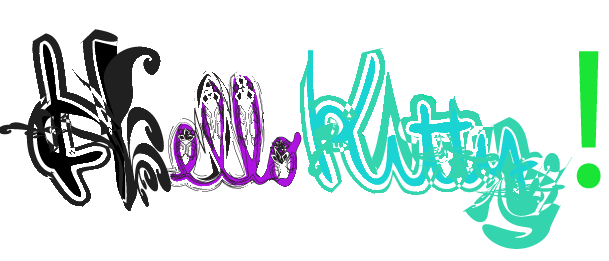
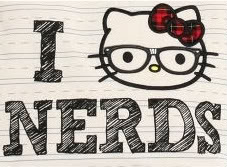
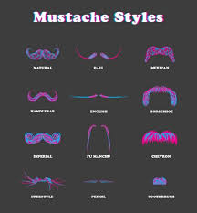
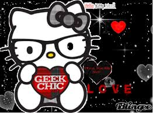
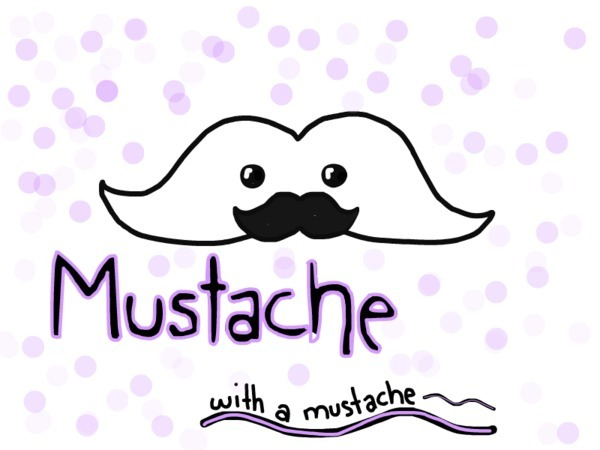

  Teenage girls all around the world have two new things to love. One just came out. One is old.
ITS HELLO KITTY AND ONE DIRECTION!!!!!
Well I'm not here to talk about One direction. I'm here to talk about
Hello Kitty was always popular with little girls. But now it is Popular with older teen girls now too!!! Its a weirtd fashion sence but thats okay. They also put mustaches on Hello Kitty too!!!
HOW CRAZY IS THAT!!!!!
Who knew that mustaches and Hello Kitty would be the new rave!!!

Well, its time for Hello Kitty to leave!!!!

HELLO KITTY SAYS BYEEEEEEEE


This one direction picture is dedicated to Jasmine:)

All mustaches deserve another mustache!!!!:)